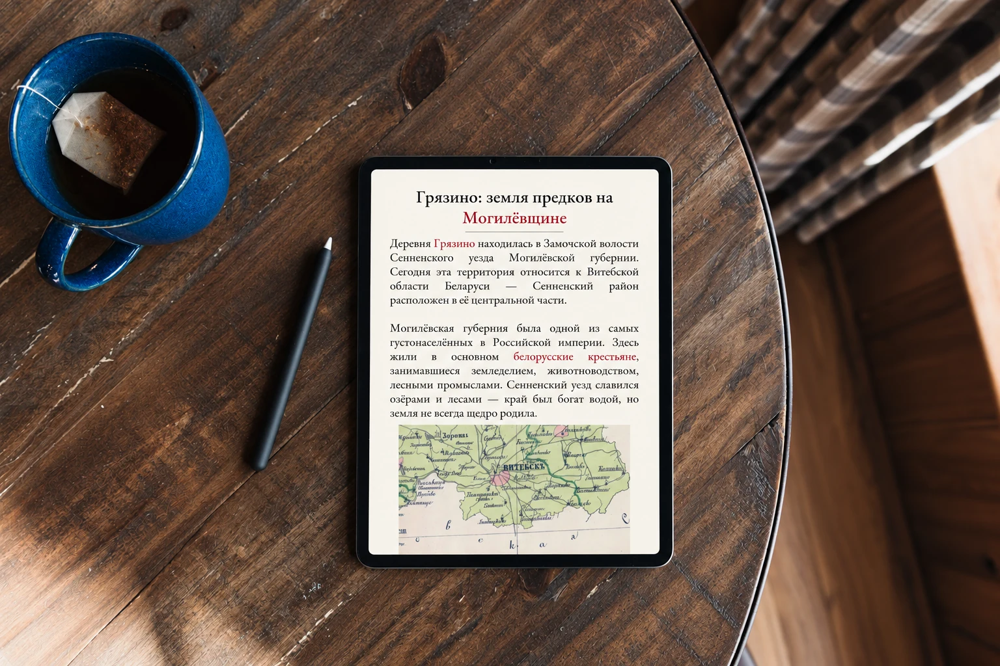
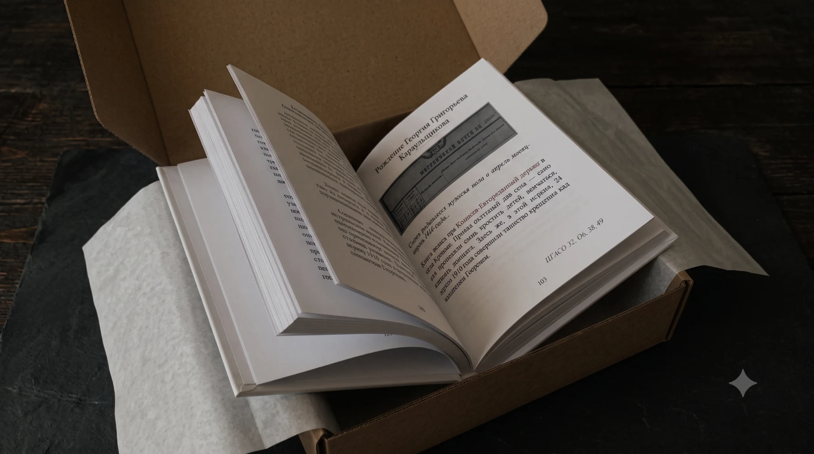
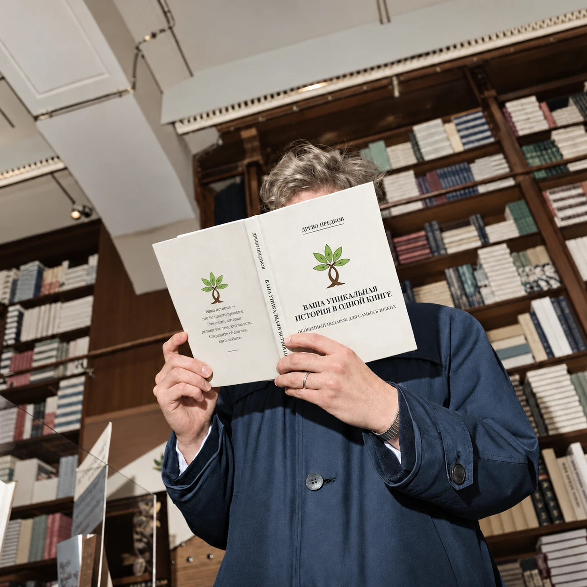

Работа сделана очень быстро, качественно, по приятной цене, вежливый и честный человек, приятно с такими сотрудничать. Максимально довольна результатом, спасибо большое!!!
Родословная книга — это история вашего рода, рассказанная живым языком. Когда исследование завершено и имена предков найдены, мы превращаем архивные записи в повествование о людях, их судьбах и времени, в котором они жили.
Вы получите не просто красивое издание, а историю рода, подкреплённую документами, — семейную реликвию, которая со временем становится только ценнее.
Заказать книгуКак создаётся книга
- Всё начинается с исследования. Мы находим ваших предков в метрических книгах, ревизских сказках и переписях, восстанавливаем имена, даты и родственные связи. Каждое поколение в книге подтверждено документами — это не легенда, а история, на которую можно опереться.
- Затем мы пишем текст. Не сухой перечень дат, а живой рассказ: где стоял дом вашей семьи, чем занимались прадеды, как большие события эпохи отзывались в судьбе каждого из них. Мы бережно сохраняем точность документа, но рассказываем так, чтобы книгу хотелось читать вслух и перечитывать.
- Книга готовится в электронном виде: её удобно читать с телефона, пересылать родным и хранить. А если хочется держать историю семьи в руках, напечатаем её в типографии — в твёрдом переплёте, с архивными фотографиями и копиями документов. Печатное издание выполняется по предоплате.
Этапы работы
-
Этап 1
- 1–2 дня
Интервью и архивный поиск
Беседуем с семьёй, собираем известные сведения и ищем предков в государственных и частных архивах. О ключевых находках сообщаем по мере их появления.
-
Этап 2
- от 20 дней
История рода и содержание книги
Расшифровываем документы, рассказываем о каждом поколении на фоне эпохи и согласовываем с вами содержание книги.
-
Этап 3
- от 7 дней
Дизайн и вёрстка
Оформляем издание: расшифровки документов, исторические справки и древо для печати на холсте. Книга готова в электронном виде, печать — по желанию.
Электронная и печатная книга
-

Электронная версия
Основной формат: та же книга с разворотами, фотографиями и копиями документов. Её удобно читать с телефона, пересылать родным в другие города и страны и хранить — она не потеряется и не выцветет.
-

Печатное издание
По желанию напечатаем книгу в типографии — в твёрдом переплёте, с архивными фотографиями и копиями документов. Семейная реликвия, которую можно подарить и передать детям и внукам. Печать — по предоплате.
Что о нас говорят заказчики
Читать все на Авито →Знакомство с Глебом было предопределено кем‑то свыше, не иначе!)) Столько новых имен удалось узнать с его помощью — просто не перечесть! Там, куда я не знала как подступиться...
Спасибо за проделанную работу!! Генеалогическое древо очень понравилось!! Юбиляр прослезился, получив такой подарок!! В процессе работы замучила правками, спасибо за терпение!!
Об услуге
Почему стоит заказать родословную книгу?
В основе книги — исследование. Мы ищем записи о ваших предках в архивах, расшифровываем метрические книги и другие документы, сопоставляем сведения и восстанавливаем историю рода на фоне эпохи. Семейная память обычно хранит два-три поколения — документы позволяют заглянуть намного глубже.
Всё найденное оформляем в книгу: копии документов с расшифровкой, исторические справки и рассказ о каждом поколении. Отдельно создаём дизайн родословного древа. А то, что уже известно по семейным рассказам, письмам и фотографиям, бережно собираем и встраиваем в общую историю.
Получается не просто красивое издание, а история рода, подкреплённая документами, — семейная реликвия, которая со временем становится только ценнее.
Для кого эта услуга?
- Для тех, кто хочет сохранить память о старшем поколении, пока есть возможность расспросить родных
- Для тех, кто ищет особенный подарок к юбилею, свадьбе или дню рождения
- Для тех, кто хочет узнать историю рода по архивным документам, а не только по семейным рассказам
- Для тех, кто хочет оставить детям и внукам цельную историю рода, а не разрозненные фотографии
Этапы работы
Калькулятор стоимости услуги
Итоговая стоимость зависит от нескольких факторов. Ответьте на вопросы ниже, чтобы узнать ориентировочную сумму, или свяжитесь с нами — уточним цену на консультации.

Примерная цена услуги
0 ₽
Мы не можем заранее знать все обстоятельства: сохранность архивов, доступность нужных записей и другие факторы, которые повлияют на объём работы. Точную стоимость назовём после того, как вы свяжетесь с нами и мы оценим вашу ситуацию.